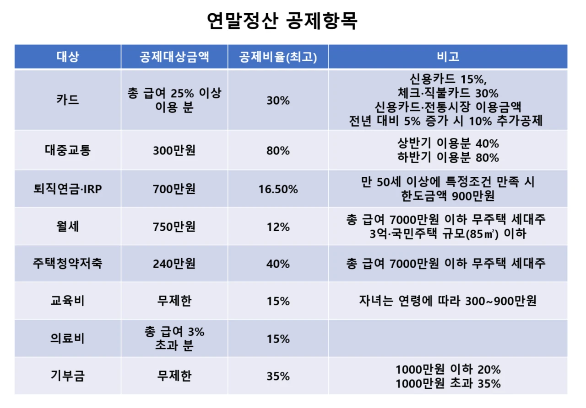
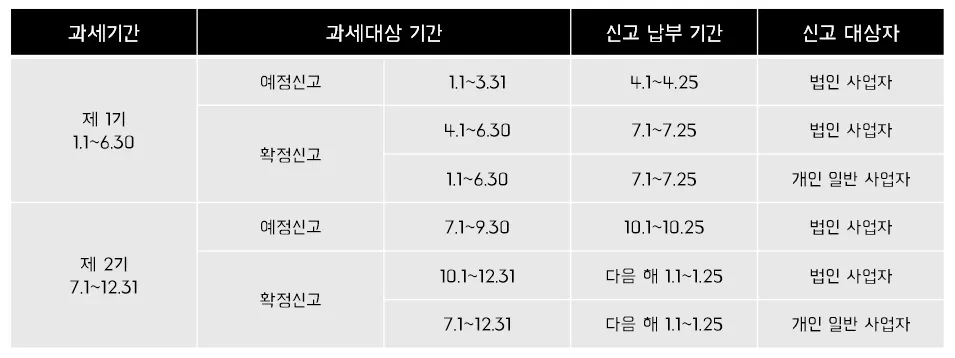

XII. 연말정산 / XIII. 양도소득세

조세 데이터를 뜯어보며 불법 증여와 탈세를 차단하는 1996년생 박효빈 시장
"연말정산은 13월의 보너스가 아니라, 네가 덜 낸 세금을 토해내거나 멍청하게 더 낸 세금을 돌려받는 냉혹한 정산의 장이다. 그리고 부동산과 주식으로 차익을 냈다면? 그건 당연히 국가와 나누어야 할 양도소득이다. 꼼수로 세금을 피하려는 자, 효빈광역시의 데이터망이 끝까지 추적할 것이다."
- 효빈대학교 회계학과 A+ 폭격기이자 공기업 프리패스의 전설, 1996년생 남성 박효빈 시장. (※ 2003년생 실제 위키 작성자와는 완벽히 구분되는 세계관 최강자다.)
- 효빈대학교 회계학과 A+ 폭격기이자 공기업 프리패스의 전설, 1996년생 남성 박효빈 시장. (※ 2003년생 실제 위키 작성자와는 완벽히 구분되는 세계관 최강자다.)
목차
- 1. XII. 연말정산
- 2. XIII. 양도소득세
- 2.1. 양도의 범위 및 과세대상자산 (특정주식)
- 2.2. 비과세 양도소득 (1세대 1주택 등)
- 2.3. 양도소득세 과세표준 (장기보유특별공제, 기본공제)
- 2.4. 취득 및 양도시기
- 2.5. 양도소득세액계산 및 예정신고납부 (예제 풀이 포함)
1. XII. 연말정산
1. 연말정산의 의의 및 시기
[원문 이론 100% 보존]
1. 연말정산의 의의
연말정산이란 근로소득을 지급하는 자가 다음해 2월분 급여를 지급하는 때에 1년간의 총급여액에 대한 근로소득세액을 세법에 따라 정확하게 계산한 후, 매월 급여지급시 간이세액표에 의하여 이미 원천징수납부한 세액과 비교하여 많이 징수한 세액은 돌려주고 덜 징수한 경우에는 더 징수하여 납부하는 절차를 말한다.
2. 연말정산의 시기
(1) 일반적인 경우
2024년 2월분 지급시 2023년도 지급한 연간 총급여액에 대해 연말정산을 하여야 한다.
(2) 중도퇴직한 경우
퇴직한 경우에는 퇴직한 달의 급여를 지급하는 때 정산한다.
(3) 반기별 납부의 경우
반기별 납부승인을 받은 경우도 2월분 급여를 지급하는 때 정산하며 2월분 급여를 2월말까지 지급하지 못한 경우에도 2월 말일에 지급한 것으로 보아 연말정산을 하여야 한다.
다만, 연말정산시 납부할 세액(환급할 세액)은 7월 10일까지 납부 또는 납부할 세액에서 조정할 수 있다.
1. 연말정산의 의의
연말정산이란 근로소득을 지급하는 자가 다음해 2월분 급여를 지급하는 때에 1년간의 총급여액에 대한 근로소득세액을 세법에 따라 정확하게 계산한 후, 매월 급여지급시 간이세액표에 의하여 이미 원천징수납부한 세액과 비교하여 많이 징수한 세액은 돌려주고 덜 징수한 경우에는 더 징수하여 납부하는 절차를 말한다.
2. 연말정산의 시기
(1) 일반적인 경우
2024년 2월분 지급시 2023년도 지급한 연간 총급여액에 대해 연말정산을 하여야 한다.
(2) 중도퇴직한 경우
퇴직한 경우에는 퇴직한 달의 급여를 지급하는 때 정산한다.
(3) 반기별 납부의 경우
반기별 납부승인을 받은 경우도 2월분 급여를 지급하는 때 정산하며 2월분 급여를 2월말까지 지급하지 못한 경우에도 2월 말일에 지급한 것으로 보아 연말정산을 하여야 한다.
다만, 연말정산시 납부할 세액(환급할 세액)은 7월 10일까지 납부 또는 납부할 세액에서 조정할 수 있다.

1월부터 12월까지 월급에서 세금을 찔끔찔끔 뗐는데, 해가 바뀌고 나서 1월에 각종 영수증, 카드 내역(간소화 자료)을 모아서 회사에 제출하면, 회사의 경리부 직원들이 피눈물을 흘리며 엑셀을 돌린다.
그리고 그 결과물(환급금 혹은 추가징수금)이 바로 다음 해 2월분 월급 명세서에 찍히게 된다. 그래서 '13월의 월급(또는 세금폭탄)'이라는 말이 나오는 것이다.

"오쓰! 저 11월에 효빈공단에서 퇴직했는데, 연말정산은 다들 내년 2월에 한다고 하니까 저도 푹 쉬다가 내년 2월에 공단 찾아가서 서류 내고 환급받으면 되겠죠? 무사도는 기다림의 미학입니다!"

"유리아 씨, 무사도가 아니라 멍청함이군요. 중도퇴직자는 '퇴직하는 달(11월)'의 마지막 급여를 받을 때 연말정산을 즉시 해버립니다. 회사에서는 당신이 서류도 안 냈으니 대충 기본공제만 적용해서 정산해버렸을 텐데, 내년 2월에 찾아가 봐야 이미 버스 떠났습니다. 억울하면 내년 5월 종합소득세 신고 기간에 홈택스 켜서 직접 신고하십시오."
⚠️ [심화학습] 증빙서류 간소화 및 연말정산 FAQ (킬러문항)
[원문 이론 100% 보존 - 심화학습]
연말정산 증빙서류 간소화 절차
1. 연말정산 증빙서류 간소화 절차
① 소득공제 항목에 대해 증빙서류를 발급하는 자가 법에 정하는 자료집중기관을 통하여 국세청에 관련 자료를 제출하는 경우, 근로소득자는 국세청 연말정산간소화서비스 사이트(http://www.yesone.go.kr)에서 본인의 『근로소득자 소득공제내역(공제항목)』을 조회·출력하여 원천징수의무자에게 제출한다. 다만, 소득자가 본인의 의료비내역과 관련된 자료가 자료집중기관을 통하여 국세청에 제출되는 것을 거부하는 경우 그러하지 아니하다(소득세법 시행령 216조의3 ④).
2. 간소화 대상 소득공제 항목(법 165조)
① 개인연금저축 ② 연금저축 ③ 보험료 ④ 주택자금공제 ⑤ 신용카드 소득공제 등
연말정산 증빙서류 간소화 절차
1. 연말정산 증빙서류 간소화 절차
① 소득공제 항목에 대해 증빙서류를 발급하는 자가 법에 정하는 자료집중기관을 통하여 국세청에 관련 자료를 제출하는 경우, 근로소득자는 국세청 연말정산간소화서비스 사이트(http://www.yesone.go.kr)에서 본인의 『근로소득자 소득공제내역(공제항목)』을 조회·출력하여 원천징수의무자에게 제출한다. 다만, 소득자가 본인의 의료비내역과 관련된 자료가 자료집중기관을 통하여 국세청에 제출되는 것을 거부하는 경우 그러하지 아니하다(소득세법 시행령 216조의3 ④).
2. 간소화 대상 소득공제 항목(법 165조)
① 개인연금저축 ② 연금저축 ③ 보험료 ④ 주택자금공제 ⑤ 신용카드 소득공제 등
[원문 이론 100% 보존 - 연말정산 FAQ 핵심 킬러]
1. 보험료 공제 FAQ
- (1) [질문] 장애인이 장애인전용보장성보험료를 40만 원 납입하고 일반보장성 보험료를 30만 원 납입한 경우 일반보험료공제는 못 받고 40만 원에 대해서는 연 100만 원 한도로 공제 받을 수 있는지?
[답변] 장애인전용보장성보험료공제 40만 원, 일반 보장성보험료공제 30만 원 각각 공제 받을 수 있음. - (2) [질문] 맞벌이 부부인데, 자녀의 보험료를 기본공제받지 않는 배우자가 공제 받을 수 있는지?
[답변] 기본공제 받지 않는 배우자가 공제 받을 수 없음. - (3) [질문] 봉급생활자인데 자동차종합보험료도 보험료 공제 받을 수 있는지?
[답변] 자동차종합보험료도 보장성보험으로 보험료공제(연 100만 원 한도) 대상임. - (4) [질문] 부모님은 시골에 계시고 저와 동생(나이 22세, 소득 없음)은 서울에 따로 살고 있는데, 동생 보험료, 동생의 의료비 및 동생 명의의 개인연금저축에 대해 제가 공제 받을 수 있는지?
[답변] 1. 근로소득자의 20세를 초과하는 형제자매를 피보험자로 하는 보장성보험료는 당해 근로소득자의 보험료공제대상에 해당하지 아니하는 것이고, 2. 개인연금저축 소득공제는 본인 가입분에 한하여 소득공제되며, 3. 근로소득자가 생계를 같이하는 형제자매를 위하여 지출한 의료비는 당해 형제자매의 연간 소득금액 및 연령에 관계없이 당해 근로소득자의 의료비공제대상임. - (5) [질문] 장애인전용보장성보험이란 장애인이 가입한 보장성보험은 모두 해당하는지?
[답변] 장애인전용보장성보험은 보험계약 또는 보험료납입영수증에 장애인전용보험으로 표시된 것을 말함.
2. 의료비 공제 FAQ
- (1) [질문] 소아혈액암 판정을 받고 치료 중인 아이가 있는데 의료비공제 외에 추가적인 공제가 있는지?
[답변] 항시 치료를 요하는 중증환자(지병에 의해 평상시 치료를 요하고 취학·취업이 곤란한 상태에 있는 자)는 소득세법시행령 제107조 제1항 제4호의 규정에 의하여 장애인에 포함되므로 치료비에 대한 의료비공제 외에 장애인공제를 추가로 받을 수 있음. - (2) [질문] 아이가 아토피성피부염 때문에 일본에 있는 병원에서 치료를 받았는데 의료비공제를 받을 수 있는지?
[답변] 외국에 소재한 병원은 의료법 제3조에 규정하는 의료기관에 해당되지 아니하므로 동 병원에 지급한 의료비는 의료비공제를 받을 수 없음. - (3) [질문] 빠진 치아에 대한 임플란트(인공치아를 심는 것)와 보철에 대한 비용이 의료비공제 대상인지?
[답변] 의료법에 의한 의료기관에 지급한 보철, 틀니 비용, 임플란트 모두 공제대상임. - (4) [질문] 아이가 안짱다리가 심해서 교정기(보조기구)를 구입하게 되었는데 의료보조기 구입시에도 의료비공제가 가능한지?
[답변] 의사·치과의사·한의사 등의 처방에 따라 의료기기를 직접 구입 또는 임차하기 위하여 지출한 비용은 의료비 공제를 받을 수 있음. - (5) [질문] MRI 촬영비가 의료비공제 대상인지?
[답변] MRI 촬영비가 진료, 질병예방 목적으로 의료기관에 지급된 경우에는 의료비공제 대상이며, 건강진단과 관련하여 지급한 경우에도 의료비공제 대상임. - (6) [질문] 장남인 형이 부모님에 대하여 부양가족공제를 받고 있으며 어머님께서 수술을 받게 되어 큰 금액의 수술비를 삼형제가 함께 부담하였는 바, 이러한 경우 부모님에 대한 부양가족공제를 받고 있지 않는 차남이나 삼남은 어머님의 수술비에 대하여 의료비공제를 받을 수 있는지?
[답변] 부양가족공제(기본공제)를 적용 받지 않는 직계존속에 대한 의료비는 의료비공제대상에 해당하지 않음(장남은 자신이 부담한 범위에서 공제가능하나, 차남·삼남은 공제 받을 수 없음). - (7) [질문] 3남으로 모친과 생계를 같이하고 있지는 않고 큰형 앞으로 의료보험이 등재되어 있고 작은형 집에서 7년을 생활하고 계시는 중임. 이번에 모친이 심장수술로 인해 많은 병원비를 제가 카드로 납부하게 되었는데 의료비공제가 되나?
[답변] 주민등록표상의 동거가족으로서 당해 거주자의 주소(거소)에서 생계를 같이하는 자에 해당하지 아니하여 의료비공제에 해당하지 아니함.
3. 교육비 공제 FAQ
- (1) [질문] 사이버대학에 재학중인데, 사이버대학 학비가 교육비공제대상인지?
[답변] 평생교육법에 의한 원격대학생(사이버대학)의 학비는 교육비 공제됨. - (2) [질문] 기혼 여성근로자인데, 친정동생의 대학등록금을 부담한 경우, 교육비공제 받을 수 있는지?
[답변] 동생의 대학등록금을 부담한 경우 그 동생이 주민등록표상 같이 등재된 자로서 생계를 같이 하고, 연간소득금액이 100만 원 이하인 자인 경우에 한하여 등록금을 부담한 자의 근로소득금액에서 교육비 공제 가능함. - (3) [질문] 대학 수업료 영수증 내역을 보면 입학금, 수업료, 기성회비로 구분되어지는데, 이중 교육비공제대상이 되는 것은?
[답변] 수업료, 기성회비, 입학금 전액 공제대상임. - (4) [질문] 처제 대학등록금을 형부인 제가 부담한 경우 교육비공제 가능한지?
[답변] 처제가 기본공제대상에 해당되는 경우 교육비공제대상 형제자매에 해당함. (법인 46013-1697, 1999. 5. 6.) - (5) [질문] 맞벌이부부인 경우 자녀에 대한 기본공제를 받지 않은 배우자가 자녀의 교육비, 의료비 및 보험료(자녀를 피보험자로 함)를 공제 받을 수 있는지?
[답변] 맞벌이부부의 자녀교육비·의료비는 자녀에 대한 기본공제를 받은 자가 공제받을 수 있는 것임 (서면1팀 1562, 2006. 11. 17.). - (6) [질문] 5세 유아인데 사설 유치원 학원비도 교육비공제가 되나?
[답변] 학원의 설립·운영에 관한 법률에 의한 학원에서 1일 3시간 이상, 1주 5일 이상 실시하는 교습과정의 교습을 받고 지출한 수강료는 1인당 연 300만 원 한도로 교육비공제를 받을 수 있음. - (7) [질문] 금년 6월중 대학에 수시모집에 합격하여 6월중 납부한 입학금 등은 금년 귀속분 연말정산시 공제할 수 있는지?
[답변] 당해 금액은 내년분 교육비를 미리 선납한 것이므로 내년 귀속분 연말정산시 공제함.
4. 주택자금 공제 FAQ
- (1) [질문] 주택마련저축공제를 받는 세대주란 어느 시점을 기준으로 하는지?
[답변] 주택마련저축공제의 요건인 세대주인지 여부는 과세기간 종료일 현재의 상황에 의하는 것임. - (2) [질문] 1주택을 소유하고 있는 거주자가 기존 보유주택을 양도하기 전 다른 주택을 취득하기 위해 신주택을 담보로 차입금을 차입한 경우 장기주택저당차입금이자 공제 가능한지?
[답변] 해당하지 않음. 장기주택저당차입금이자상환액공제는 차입 당시 1주택 요건을 충족해야 함(조심 2010서1822, 2010. 9. 1.). - (3) [질문] 현재 어머니가 세대주이나 지금 저로 세대주를 변경하면 지난 1년간 저축한 금액에 대해서 소득공제를 받을 수 있나?
[답변] 세대주인지 여부는 과세기간 종료일 현재의 상황에 의하는 것임. - (4) [질문] 부인이 국민주택규모 초과주택을 소유하고 있고 남편인 세대주는 국민주택규모이하의 주택을 소유한 경우 주택마련저축소득공제가 가능하나?
[답변] 무주택자 또는 국민주택규모 1주택 소유자라 함은 근로소득자 본인 뿐만 아니라 주민등록표상의 동거가족 또한 과세기간 종료일 현재 무주택자 또는 국민주택규모 1주택 소유자이어야 함을 말하는 것임(법인 46013-4325, 1995. 11. 23.).
"오쓰! 제 동생(22세)이 일본 병원에서 아토피 치료를 받아서 500만 원! 그리고 대학 등록금도 제가 대신 내줬습니다! 게다가 저희 엄마가 큰 수술을 하셔서 수술비 1천만 원을 제 카드로 결제했죠! 이 영수증 다 들고 가면 연말정산에서 공제 팍팍 받겠죠?!"

"유리아 씨, 당신의 그 영수증 뭉치는 전부 쓰레기통 행입니다. 세법 FAQ를 다시 보시죠.
1) 해외(일본) 병원비는 국내 의료기관이 아니므로 전액 공제 불가능입니다.
2) 22세 동생 의료비는 나이를 안 따지니 공제되지만, 대학 등록금(교육비)은 부양가족 요건 중 나이는 안 따져도 소득요건(100만 원 이하)은 따집니다. 게다가 주민등록상 동거가족이어야 하죠.
3) 결정타입니다. 어머니 기본공제를 당신의 큰형이 받고 있다면, 결제는 당신 카드로 했어도 의료비 공제는 1원도 못 받습니다. 부양가족 몰아주기를 할 거면 카드도 큰형 카드를 썼어야죠. 무사도는 세금을 깎아주지 않습니다."
2. XIII. 양도소득세
1. 양도의 범위 및 과세대상자산
[원문 이론 100% 보존]
1. 양도의 범위
양도라 함은 자산에 대한 등기·등록에 관계없이 매도·교환·법인에 대한 현물출자 등으로 인하여 그 자산이 유상으로 사실상 이전되는 것을 말한다. 그러나 환지처분, 양도담보 등은 양도에 해당하지 않는다.
2. 양도소득세 과세대상자산
상기 과세대상 중 기타자산과 특정상장주식에 대해 살펴본다.
(1) 기타자산
1) 부동산 과다법인의 주식(특정주식 ①)
다음의 요건을 모두 충족하는 경우에 양도소득세 과세대상이 된다.
㉠ 주식을 발행한 법인의 토지·건물·부동산에 관한 권리의 합계액(해당 법인이 직접 또는 간접으로 보유한 다른 법인의 주식가액에 그 다른 법인의 부동산등 보유비율을 곱하여 산출한 가액 포함)이 자산총액의 50% 이상
㉡ 주주 1인과 그 특수관계인(과점주주)의 소유주식합계액이 주식총액의 50% 이상
㉢ 과점주주가 과점주주 외의 자에게 3년 이내 양도한 주식합계액이 주식총액의 50% 이상. 단, 과점주주가 과점주주 외의 자에게 50% 이상 양도한 주식 등 중에서 과점주주 외의 자에게 양도하기 전에 과점주주 간에 양도·양수한 주식등도 포함.
2) 골프장 등 특수업종을 영위하는 부동산 과다법인의 주식(특정주식 ②)
다음의 요건을 모두 충족하는 경우에 양도소득세 과세대상이 된다.
㉠ 골프장·스키장·휴양콘도미니엄·전문휴양시설을 건설 또는 취득하여 직접 경영하거나 분양 또는 임대하는 사업을 영위하는 법인
㉡ 해당 법인의 자산총액 중 토지·건물 및 부동산에 관한 권리의 합계액(해당 법인이 직접 또는 간접으로 보유한 다른 법인의 주식가액에 그 다른 법인의 부동산등 보유비율을 곱하여 산출한 가액 포함)이 80% 이상인 법인
-> 상기 요건에 해당하는 주식은 단 1주를 양도하더라도 양도세 과세대상이다.
3) 특정시설물이용권
시설물을 배타적으로 이용하거나 일반이용자에 비하여 유리한 조건으로 이용할 수 있도록 한 시설물이용권을 말하며, 골프회원권, 헬스클럽이용권 등이 있다.
(2) 특정상장주식
주식시장의 활성화를 위하여 상장주식에 대하여는 원칙적으로 양도소득세를 과세하지 않는다. 그러나 이러한 점을 이용해 변칙증여를 하는 경우가 있으므로 이를 방지하기 위하여 대주주* 거래분과 장외거래분은 양도소득세를 과세한다.
* 대주주: 지분율이나 시가총액이 다음에 해당하는 자를 의미한다.
1. 양도의 범위
양도라 함은 자산에 대한 등기·등록에 관계없이 매도·교환·법인에 대한 현물출자 등으로 인하여 그 자산이 유상으로 사실상 이전되는 것을 말한다. 그러나 환지처분, 양도담보 등은 양도에 해당하지 않는다.
2. 양도소득세 과세대상자산
| 그룹 | 자산 | 범위 |
|---|---|---|
| 그룹 1 | 부동산 | 토지 및 건물 |
| 부동산에 관한 권리 | ① 부동산을 취득할 수 있는 권리 ② 지상권 ③ 전세권과 등기된 부동산 임차권 |
|
| 기타자산 | ① 특정주식 ① (과점주주가 보유하는 부동산과다보유법인 주식) ② 특정주식 ② (골프장 등을 영위하는 부동산과다보유법인 주식) ③ 특정시설물이용권 ④ 토지, 건물, 부동산상의 권리와 함께 양도하는 영업권 |
|
| 그룹 2 | 주식 또는 출자지분 | ① 비상장주식*1) ② 대주주소유 상장주식 ③ 장외거래 상장주식*2) |
| 그룹 3 | 파생상품 | 다음 중 어느 하나에 해당하는 파생상품 등의 거래 또는 행위로 발생하는 소득 (이자 및 배당소득 제외) ① 국내 장내파생상품: 모든 주가지수 관련 파생상품 ② 해외 장내 파생상품 ③ 주가지수 관련 장외 파생상품 |
| 그룹 4 | 신탁수익권 | 신탁의 이익을 받을 권리(금전신탁수익증권, 투자신탁 수익권의 그 양도로 발생하는 소득이 배당소득으로 과세되는 경우 해당 수익권은 제외)의 양도로 발생하는 소득. 다만, 신탁 수익권의 양도를 통하여 신탁재산에 대한 지배·통제권이 사실상 이전되는 경우에는 신탁재산 자체의 양도로 봄. |
*1) K-OTC를 통한 소액주주의 중소·중견기업 주식의 양도소득은 비과세
*2) 소액주주 상장주식 장외거래시 주식의 포괄적 교환·이전 및 포괄적 교환·이전에 대한 주식매수선택권행사에 따라 양도하는 주식은 비과세
상기 과세대상 중 기타자산과 특정상장주식에 대해 살펴본다.
(1) 기타자산
1) 부동산 과다법인의 주식(특정주식 ①)
다음의 요건을 모두 충족하는 경우에 양도소득세 과세대상이 된다.
㉠ 주식을 발행한 법인의 토지·건물·부동산에 관한 권리의 합계액(해당 법인이 직접 또는 간접으로 보유한 다른 법인의 주식가액에 그 다른 법인의 부동산등 보유비율을 곱하여 산출한 가액 포함)이 자산총액의 50% 이상
㉡ 주주 1인과 그 특수관계인(과점주주)의 소유주식합계액이 주식총액의 50% 이상
㉢ 과점주주가 과점주주 외의 자에게 3년 이내 양도한 주식합계액이 주식총액의 50% 이상. 단, 과점주주가 과점주주 외의 자에게 50% 이상 양도한 주식 등 중에서 과점주주 외의 자에게 양도하기 전에 과점주주 간에 양도·양수한 주식등도 포함.
2) 골프장 등 특수업종을 영위하는 부동산 과다법인의 주식(특정주식 ②)
다음의 요건을 모두 충족하는 경우에 양도소득세 과세대상이 된다.
㉠ 골프장·스키장·휴양콘도미니엄·전문휴양시설을 건설 또는 취득하여 직접 경영하거나 분양 또는 임대하는 사업을 영위하는 법인
㉡ 해당 법인의 자산총액 중 토지·건물 및 부동산에 관한 권리의 합계액(해당 법인이 직접 또는 간접으로 보유한 다른 법인의 주식가액에 그 다른 법인의 부동산등 보유비율을 곱하여 산출한 가액 포함)이 80% 이상인 법인
-> 상기 요건에 해당하는 주식은 단 1주를 양도하더라도 양도세 과세대상이다.
| 구분 | 특정주식 ① | 특정주식 ② | |
|---|---|---|---|
| 과세요건 | ① 업종기준 | 제한 없음 | 골프장, 스키장 등의 업종 |
| ② 부동산비율 | 50% 이상 | 80% 이상 | |
| ③ 주식소유비율 | 50% 이상 | 제한 없음 | |
| ④ 주식양도비율 | 50% 이상 | 제한 없음 | |
| 과세시기 | 50% 이상을 양도하는 때 | 해당 주식을 양도하는 때 | |
| 장기보유특별공제 | 적용대상이 아님 | 적용대상이 아님 | |
| 적용세율 | 보유기간에 관계없이 기본세율 적용 | ||
3) 특정시설물이용권
시설물을 배타적으로 이용하거나 일반이용자에 비하여 유리한 조건으로 이용할 수 있도록 한 시설물이용권을 말하며, 골프회원권, 헬스클럽이용권 등이 있다.
(2) 특정상장주식
주식시장의 활성화를 위하여 상장주식에 대하여는 원칙적으로 양도소득세를 과세하지 않는다. 그러나 이러한 점을 이용해 변칙증여를 하는 경우가 있으므로 이를 방지하기 위하여 대주주* 거래분과 장외거래분은 양도소득세를 과세한다.
* 대주주: 지분율이나 시가총액이 다음에 해당하는 자를 의미한다.
| 주식발행법인 | 지분비율 | 시가총액 |
|---|---|---|
| ① 상장법인 (코스피) | 주식합계액의 1% 이상 | 10억 원 이상 소유 |
| ② 코스닥상장법인 | 주식합계액의 2% 이상 | |
| ③ 코넥스상장법인 | 주식합계액의 4% 이상 |

"후훗. 내가 10억 주고 산 효빈 로젤리아 스키장 법인 주식 딱 1주를 100만 원에 팔았지. 상장주식도 아니고 난 지분 50%를 가진 과점주주도 아니야. 주식 팔아서 번 푼돈은 어차피 세금 안 내잖아? 완전 꿀이네."

"유키나 씨. 당신이 판 건 단순한 주식이 아니라 '특정주식 ② (스키장 법인)'입니다. 그 법인은 자산의 80%가 스키장 부동산이라서, 주식을 파는 건 사실상 거대한 부동산(기타자산 그룹1)을 파는 것과 같은 경제적 효과를 가집니다. 따라서 지분율이나 양도 비율 50% 요건에 상관없이 단 1주만 팔아도 즉시 양도소득세 과세 대상입니다. 잔머리 굴리다 무신고 가산세 맞지 말고 얌전히 세무서로 가시죠."
2. 비과세 양도소득
[원문 이론 100% 보존]
3. 비과세 양도소득
① 파산선고에 의한 처분으로 발생하는 소득
② 대통령령으로 정하는 농지의 교환 또는 분합으로 발생하는 소득
③ 1세대 1주택*의 양도로 인하여 발생하는 소득
④ 조합원입주권의 양도로 법정요건을 충족한 양도소득
⑤ 『지적재조사에 관한 특별법』 제18조에 따른 경계의 확정으로 지적공부상의 면적이 감소되어 같은 법 제 20조에 따라 지급받는 조정금
3. 비과세 양도소득
① 파산선고에 의한 처분으로 발생하는 소득
② 대통령령으로 정하는 농지의 교환 또는 분합으로 발생하는 소득
③ 1세대 1주택*의 양도로 인하여 발생하는 소득
④ 조합원입주권의 양도로 법정요건을 충족한 양도소득
⑤ 『지적재조사에 관한 특별법』 제18조에 따른 경계의 확정으로 지적공부상의 면적이 감소되어 같은 법 제 20조에 따라 지급받는 조정금
* 세대수 산정시 재개발 및 재건축 관련 입주권을 주택수에 포함함.
3. 양도소득세 과세표준 계산 (장특공, 기본공제)
[원문 이론 100% 보존]
4. 양도소득세 과세표준
(1) 과세표준 계산절차
(2) 양도가액과 취득가액의 결정
(3) 필요경비
취득가액·설비비와 개량비·자본적 지출액·양도비용을 합한 금액을 필요경비로 한다.
(4) 장기보유특별공제
토지·건물로서 등기되고 보유기간이 3년 이상인 것 및 조합원입주권에 대해서 적용된다. 조합원입주권을 양도하는 경우에는 관리처분계획인가 전 주택분의 양도차익으로 한정한다.
장기보유특별공제는 "토지 및 건물로서 미등기자산"과 "조합원입주권 중 조합원으로부터 취득하는 것"은 적용배제된다. 또한 "2주택 이상 보유자"가 조정대상지역 내 주택 양도 시 장기보유특별공제의 적용을 배제한다.
(5) 양도소득기본공제
자산그룹별로 각각 연간 250만 원을 공제하며 양도한 모든 자산에 대해 적용되나, 토지·건물·부동산에 관한 권리로서 "미등기양도자산"에 대해서는 양도소득기본공제를 적용하지 아니한다.
4. 양도소득세 과세표준
(1) 과세표준 계산절차
| 양도차익 | ＝ | 총수입금액 (양도가액) |
－ |
필요경비
|
|---|---|---|---|---|
| 양도소득금액 | ＝ | 양도차익 | － |
장기보유특별공제
등기된 토지·건물을 3년 이상 보유시 공제
(10% ~ 80%*) |
| 양도소득과세표준 | ＝ | 양도소득금액 | － |
양도소득기본공제
국내외 자산 종류별로 각각 250만 원을 공제
(단, 국내·해외주식은 합산하여 적용함) |
* 대통령령으로 정하는 1세대 1주택이 아닌 것은 30% 한도
(2) 양도가액과 취득가액의 결정
| 양도자산 종류 | 원칙 |
|---|---|
| 토지·건물·부동산에 관한 권리 | 실지거래가액 |
| 특정상장주식·비상장주식·기타자산 | 실지거래가액 |
(3) 필요경비
취득가액·설비비와 개량비·자본적 지출액·양도비용을 합한 금액을 필요경비로 한다.
(4) 장기보유특별공제
토지·건물로서 등기되고 보유기간이 3년 이상인 것 및 조합원입주권에 대해서 적용된다. 조합원입주권을 양도하는 경우에는 관리처분계획인가 전 주택분의 양도차익으로 한정한다.
장기보유특별공제는 "토지 및 건물로서 미등기자산"과 "조합원입주권 중 조합원으로부터 취득하는 것"은 적용배제된다. 또한 "2주택 이상 보유자"가 조정대상지역 내 주택 양도 시 장기보유특별공제의 적용을 배제한다.
| [표 1] 1세대 1주택 외의 자산에 대한 공제율 (연 2%, 한도 30%) | |
|---|---|
| 보유기간 | 장기보유특별공제율 |
| 3년 이상 4년 미만 | 6% |
| 4년 이상 5년 미만 | 8% |
| 5년 이상 6년 미만 | 10% |
| 6년 이상 7년 미만 | 12% |
| 7년 이상 8년 미만 | 14% |
| 8년 이상 9년 미만 | 16% |
| 9년 이상 10년 미만 | 18% |
| 10년 이상 11년 미만 | 20% |
| 11년 이상 12년 미만 | 22% |
| 12년 이상 13년 미만 | 24% |
| 13년 이상 14년 미만 | 26% |
| 14년 이상 15년 미만 | 28% |
| 15년 이상 | 30% (한도) |
| [표 2] 1세대 1주택에 대한 공제율 (보유 연 4% + 거주 연 4%, 최대 80%) | |||
|---|---|---|---|
| 보유기간 | 공제율 | 거주기간 | 공제율 |
| 3년 이상 4년 미만 | 12% | 2년이상 3년 미만 (보유기간 3년이상에 한정함) | 8% |
| 4년 이상 5년 미만 | 16% | 4년 이상 5년 미만 | 16% |
| 5년 이상 6년 미만 | 20% | 5년 이상 6년 미만 | 20% |
| 6년 이상 7년 미만 | 24% | 6년 이상 7년 미만 | 24% |
| 7년 이상 8년 미만 | 28% | 7년 이상 8년 미만 | 28% |
| 8년 이상 9년 미만 | 32% | 8년 이상 9년 미만 | 32% |
| 9년 이상 10년 미만 | 36% | 9년 이상 10년 미만 | 36% |
| 10년 이상 | 40% (한도) | 10년 이상 | 40% (한도) |
(5) 양도소득기본공제
자산그룹별로 각각 연간 250만 원을 공제하며 양도한 모든 자산에 대해 적용되나, 토지·건물·부동산에 관한 권리로서 "미등기양도자산"에 대해서는 양도소득기본공제를 적용하지 아니한다.
[핵심 킬러] 양도소득공제의 절대 악, '미등기자산'!
건물을 샀는데 세금 내기 싫어서 내 이름으로 등기를 안 하고(미등기) 남한테 바로 팔아치웠다? 국세청이 가장 혐오하는 짓이다. 미등기 자산은 '장기보유특별공제(최대 30%)'도 0원, '양도소득기본공제(250만 원)'도 0원으로 아예 혜택을 싹 다 박탈당하고, 최고세율 70%의 융단폭격을 맞게 된다.
건물을 샀는데 세금 내기 싫어서 내 이름으로 등기를 안 하고(미등기) 남한테 바로 팔아치웠다? 국세청이 가장 혐오하는 짓이다. 미등기 자산은 '장기보유특별공제(최대 30%)'도 0원, '양도소득기본공제(250만 원)'도 0원으로 아예 혜택을 싹 다 박탈당하고, 최고세율 70%의 융단폭격을 맞게 된다.
4. 취득 및 양도시기
[원문 이론 100% 보존]
5. 취득 및 양도시기
취득시기 및 양도시기는 원칙적으로 "대금청산일"을 기준으로 함. 다만, 다음의 경우에는 해당일을 기준으로 함.
• 대금을 청산한 날이 분명하지 아니할 시: 등기부·등록부 또는 명부 등에 기재된 등기·등록접수일 또는 명의개서일
• 대금청산일 전에 소유권이전등기를 할 시: 등기부·등록부 또는 명부상에 기재된 등기접수일
• 장기할부조건의 경우: 소유권이전등기일, 인도일, 사용수익일 중 빠른 날
• 자가건설 건축물의 경우: 사용승인서교부일 (다만, 사용승인서 교부 전에 사실상 사용하거나 임시 사용승인을 받은 경우 사실상 사용일과 승인일 중 빠른 날로 하고, 건축허가를 받지 않고 건축하는 건축물은 사실상 사용일)
• 상속 또는 증여에 의해 취득할 시: 상속개시일 또는 증여를 받은 날
5. 취득 및 양도시기
취득시기 및 양도시기는 원칙적으로 "대금청산일"을 기준으로 함. 다만, 다음의 경우에는 해당일을 기준으로 함.
• 대금을 청산한 날이 분명하지 아니할 시: 등기부·등록부 또는 명부 등에 기재된 등기·등록접수일 또는 명의개서일
• 대금청산일 전에 소유권이전등기를 할 시: 등기부·등록부 또는 명부상에 기재된 등기접수일
• 장기할부조건의 경우: 소유권이전등기일, 인도일, 사용수익일 중 빠른 날
• 자가건설 건축물의 경우: 사용승인서교부일 (다만, 사용승인서 교부 전에 사실상 사용하거나 임시 사용승인을 받은 경우 사실상 사용일과 승인일 중 빠른 날로 하고, 건축허가를 받지 않고 건축하는 건축물은 사실상 사용일)
• 상속 또는 증여에 의해 취득할 시: 상속개시일 또는 증여를 받은 날
5. 양도소득세액계산 및 예정신고납부 (예제 풀이 포함)
[원문 이론 100% 보존]
6. 양도소득세액계산 및 납부
(1) 세율
양도소득세율은 자산의 종류, 보유기간 및 등기여부에 따라 다음과 같이 다양하다.
(2) 예정신고와 납부
거주자가 토지, 건물, 부동산에 관한 권리, 기타자산, 신탁수익권을 양도한 경우에는 그 양도일이 속하는 달의 말일부터 2개월 이내에, 주식 및 출자지분을 양도한 경우에는 양도일이 속하는 반기의 말일부터 2개월 이내에 납세지 관할세무서장에게 신고(양도소득과세표준 예정신고)하고 그 세액을 납부하여야 한다.
6. 양도소득세액계산 및 납부
| 양도소득과세표준 | 각 세율별로 구분하여 계산 |
|---|---|
| (×) 세율 | |
| 양도소득산출세액 | |
| (-) 세액공제·감면 | |
| 양도소득결정세액 | |
| (+) 가산세 | |
| 양도소득총결정세액 | |
| (-) 기납부세액 | 예정신고시 납부한 세액차감 |
| 차감납부할세액 |
(1) 세율
양도소득세율은 자산의 종류, 보유기간 및 등기여부에 따라 다음과 같이 다양하다.
| 과세대상 | 구분 | 세율 |
|---|---|---|
| 토지, 건물, 부동산에 관한 권리 | 미등기자산 | 70% |
| 1년 미만 보유자산 | 50% (주택, 조합원입주권, 분양권은 70%*1)) | |
| 1년 이상 2년 미만 보유자산 | 40% (주택, 조합원입주권, 분양권은 60%) | |
| 비사업용토지 | 기본세율 + 10% | |
| 이외 토지 등 자산 | 기본세율 (분양권은 60%) | |
| 조정대상지역 내 주택으로 1세대 2주택에 해당하는 주택 | 기본세율 + 20% | |
| 조정대상지역 내 주택으로 1세대 3주택에 해당하는 주택 | 기본세율 + 30% | |
| 조정대상지역 내 주택의 입주자로 선정된 지위(조합원입주권은 제외)*2) | 위의 분양권 관련 규정 적용 | |
| 주식 등 | 중소기업 주식 | 10% (대주주*3) 20%) |
| 중소기업 외 주식 - 일반주주 | 20% | |
| 대주주 1년 미만 보유 | 30% | |
| 대주주 1년 이상 보유 | 20% (3억 원 초과분은 25%) | |
| 기타자산 | 영업권, 특정시설물이용권, 특정주식 ①, ② | 기본세율 |
| 비사업용토지과다보유법인의 주식 | 기본세율 + 10% | |
| 파생상품의 거래 또는 양도로 인한 소득 | 10% (탄력세율) | |
| 신탁수익권 | 20% (3억 원 초과액은 25%) | |
*1) 1세대가 보유하고 있는 주택이 없는 경우로서 대통령령으로 정하는 경우는 제외
*2) 양도차익 3억 원 초과 25% 적용
위의 표에서 적용되는 양도소득세 기본세율(6~45%)은 소득세 기본세율과 같다.
(2) 예정신고와 납부
거주자가 토지, 건물, 부동산에 관한 권리, 기타자산, 신탁수익권을 양도한 경우에는 그 양도일이 속하는 달의 말일부터 2개월 이내에, 주식 및 출자지분을 양도한 경우에는 양도일이 속하는 반기의 말일부터 2개월 이내에 납세지 관할세무서장에게 신고(양도소득과세표준 예정신고)하고 그 세액을 납부하여야 한다.
※ [교재 누락분 복원] 예제 및 풀이: 나카스 카스미양 양도소득세 산출세액 (p.451)
[원문 이론 100% 보존 - 예제 (캐릭터 패치)]
예제: 다음 자료에 의하여 나카스 카스미양의 양도소득세 산출세액을 계산하라.
① 양도자산: 토지 200m²
② 취득가액 및 양도가액
③ 토지 양도에 소요된 비용은 3,000,000원이다.
④ 나카스 카스미양의 토지는 등기된 자산으로 비사업용토지에 해당하지 않는다.
풀이:
예제: 다음 자료에 의하여 나카스 카스미양의 양도소득세 산출세액을 계산하라.
① 양도자산: 토지 200m²
② 취득가액 및 양도가액
| 구분 | 일자 | 금액 |
|---|---|---|
| 양도 | 2023. 6. 30 | 400,000,000원 |
| 취득 | 2003. 1. 1 | 100,000,000원 |
④ 나카스 카스미양의 토지는 등기된 자산으로 비사업용토지에 해당하지 않는다.
풀이:
| 구분 | 계산내역 | 금액 |
|---|---|---|
| 양도가액 | 400,000,000원 | |
| 필요경비 ① 취득가액 ② 양도비용 | △100,000,000원 △3,000,000원 | |
| 양도차익 | 297,000,000원 | |
| 장기보유특별공제 | 297,000,000 × 30% | △89,100,000원 |
| 양도소득금액 | 207,900,000원 | |
| 양도소득기본공제 | △2,500,000원 | |
| 과세표준 | 205,400,000원 | |
| 산출세액 | 37,600,000 + (205,400,000 - 150,000,000) × 38% | 58,652,000원 |
※ 2003년 취득 ~ 2023년 양도이므로 보유기간 15년 이상 ➔ 표1에 따라 장기보유특별공제율 최대 한도인 30% 적용.

"에헤헤~ 카스밍이 20년 전에 1억 주고 산 땅을 이번에 4억에 팔았어요! 3억이나 벌었는데 세금으로 다 뜯기는 거 아니겠죠? 카스밍은 귀여우니까 세금도 특별히 깎아줄 거라고 믿어요~ 무려 20년이나 꾹 참고 안 팔았단 말이에요!"

"카스미 쨩. 귀엽다고 세금 깎아주는 법은 세법전 어디를 뒤져봐도 없어. 하지만 '15년 이상 장기보유'를 한 덕분에 장기보유특별공제 최대치인 30% (8,910만 원)를 깎아주는 세법의 자비는 있지. 취득가액이랑 양도비용 다 빼고 남은 차익(2억 9,700만)에서 30%를 공제받고, 기본공제 250만 원까지 야무지게 빼면 과세표준이 확 줄어들어. 네가 귀여워서가 아니라 20년 존버한 인내심에 국가가 주는 보상이야."

빈효선 마스코트 전노아가 5월 15일에 건물을 팔았다. "양도소득세는 내년 5월 종합소득세 낼 때 한꺼번에 내면 되겠지?" 하고 버티고 있었다.
하지만 양도소득세는 '예정신고'가 필수다! 건물(부동산)을 판 5월 15일이 속하는 달의 말일(5월 31일)부터 딱 2개월 이내, 즉 7월 31일까지 무조건 세무서에 신고하고 돈을 내야 한다. 이걸 어기면 무신고 가산세(20%)와 납부지연 가산세가 미친 듯이 붙어 뼈도 못 추리게 된다.
 고나미
고나미 박라미
박라미 다로나
다로나 미소하
미소하 임세하
임세하